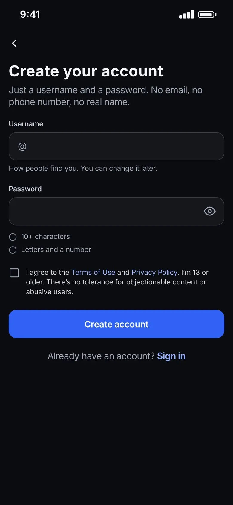
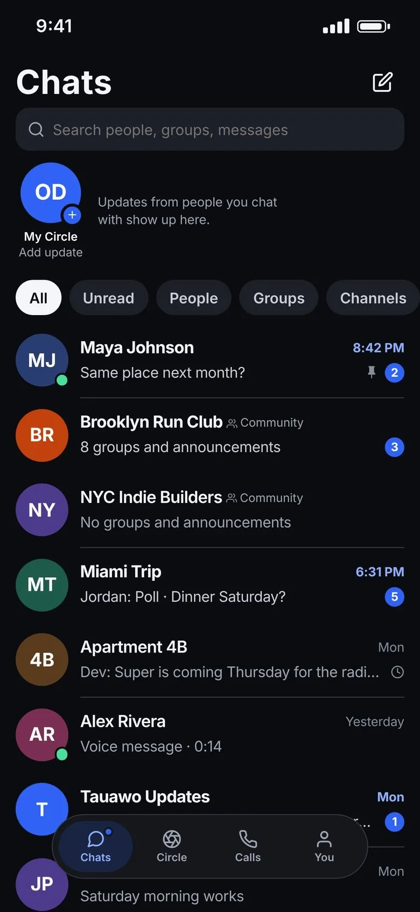
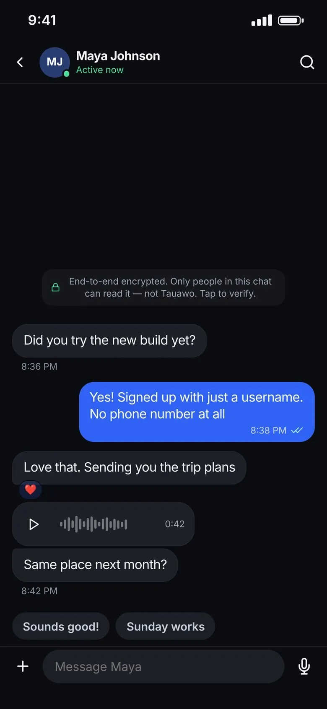
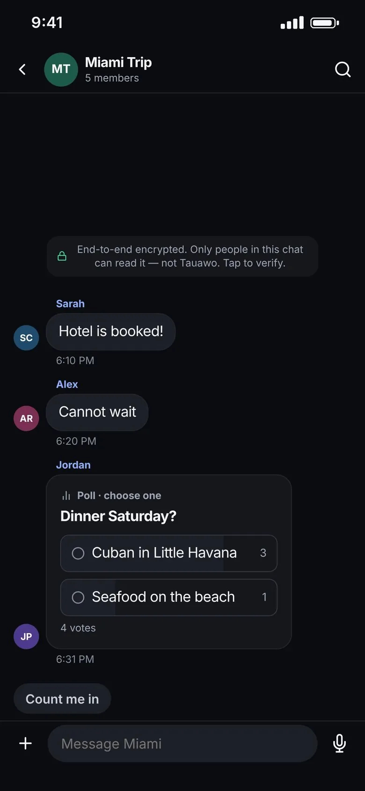
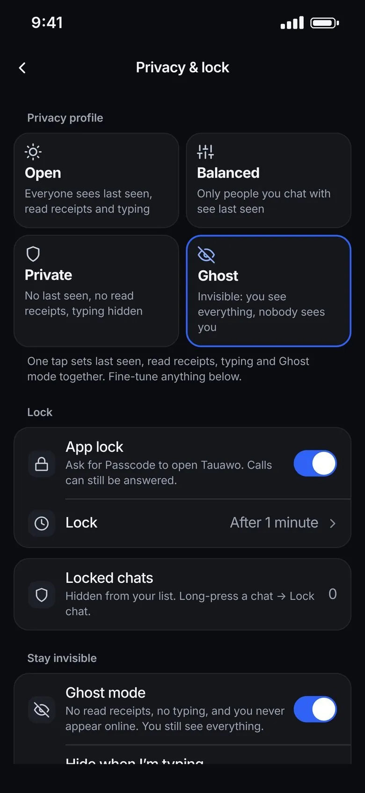
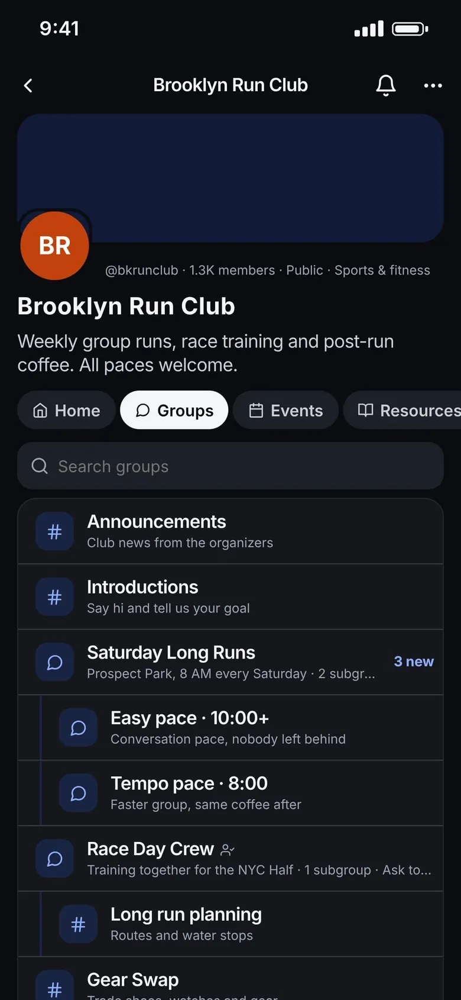

A name, not a number.
Pick a username and a password. That's the whole sign-up. Change your username whenever you like, and share it or your QR code to start talking.

Private messenger · In private testing
An end-to-end encrypted messenger you join with a username. Everything around this text is what our servers see. The lens shows what your friends see.
01 · What we never ask for
Your phone number
It's tied to your real name, your carrier and nearly every account you own. You sign up with a username and a password instead.
Your contacts
Tauawo never asks for your address book. You add people by username or by scanning their QR code.
Your attention
No ads in your chats. Nothing to scroll past to reach the people you came to talk to.
02 · The app
Real screens from the app, with sample chats.
Pick a username and a password. That's the whole sign-up. Change your username whenever you like, and share it or your QR code to start talking.

Filter by unread, people, groups and channels. Sort chats into folders, pin the ones that matter and star messages you'll want again.

Text, voice notes, photos and files, all end-to-end encrypted. Set a timer and every phone in the chat deletes the messages on its own.

Polls, replies and reactions for the trip, the dinner, the group project. Group chats get the same encryption as one-to-one chats.

Never appear online, send no read receipts and hide your typing, while you still see all of it. One switch.

Split a big community into topics and subgroups so it never turns into one noisy chat. Add events with RSVPs, shared resources and join rules for each group.

Also in Tauawo
03 · Privacy
Last seen, read receipts and typing, set together by one profile. Try each one and watch two phones change.
Maya's phoneFriend
Leaving now, see you at 8
Read 8:02Deliveredtyping
Stranger's phoneNo chats yet
They can see when you're active. Nothing about your activity is shown.
Everyone sees when you're online, when you've read their message and when you're typing. People you chat with see when you're online. Strangers see nothing. No last seen, no read receipts, and your typing stays hidden. You never appear online and nobody knows you've read their message. You still see everything.
04 · Security
Messages in private chats and groups are encrypted on your phone and decrypted only on the phones they're meant for.
Your phone
See you at 8 by the arch
Encrypted here, with keys that never leave your device.
What our servers hold
Q7mT0v+fZx2R9kLwP4hN1sYcB8uJ3eAqGd6/Vt5oXi0nHr7KyWbMpE2jCl9UaS4gFz1x==
Passed along without a key to read it.
Maya's phone
See you at 8 by the arch
Decrypted only on her device.
Ready. Type anything above and press Send.
X25519 + ML-KEM-768, the NIST post-quantum standard. An attacker would need to break both.XChaCha20-Poly1305, which also detects tampering.05 · Built in public
Progress, mistakes and decisions, posted on X as they happen.
Messaging, groups, calls, communities and privacy profiles on test phones.
Invites in small batches. The independent security audit begins.
App Store and Google Play, with the audit report published.
06 · Questions
Really. A username and a password is the whole sign-up. No email or real name either.
Not in private chats or groups. They're encrypted with keys that exist only on your devices. Channels are the exception, because they're public by design.
Someone could record encrypted traffic today and try to crack it later with a quantum computer. Tauawo's key exchange adds ML-KEM-768, designed to resist that, on top of a proven classical method.
Not yet. An independent audit is planned before public launch, and the report will be published.
iPhone and Android, including tablets.
Follow @tauawo on X. Beta invites are posted there first. Questions go to @oddaneenglish.
Beta invites go out on X first, in small batches.